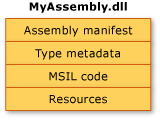
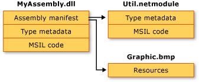

-
Modules vs. Assembly
Any .NET supported language e.g. C#, F#. VB, can be compiled into a modules .netmodule. These modules can be understood by the .NET CLR (common language runtime). But modules cannot not be run directly, they must be linked to a library .dll or a application .exe file.
A module can involve multiple namespace, a namespace can span over multiple modules, or assembly.
Library Assembly has an internal manifest file that a module doesn't have. An assembly can have one or more modules, and the manifest includes the metadata about these modules. An assembly can also depend on other assemblies.
Application Assembly has a static Main function that Library Assembly doesn't have.
csc /t:module Formatter.cs # compile a code into a module.
csc /out:Formatter.dll /t:library Formatter.cs # compile a code into an library assembly.
csc /out:MultiFileLibrary.dll /t:library /addmodule:Formatter.netmodule Logger.cs # compile a code along with a module into an assembly. This assembly has two modules.
csc /out:App.exe /t:exe /addmodule:Formatter.netmodule Main.cs # compile code into application assembly.
Assemblies in the Common Language Runtime Read here.
Purposes of assomblies
1). a reference scope boundary; 2). a version boundary; 3). a security boundary; 4). deployment (running) unit.
Inside an assembly
An assembly contains 1). a manifest, 2) type metadata, 3) MSIL code of these types 4). resource .e.g picture, xml files. These 4 elements can be placed in a single .dll file or they can be spilted to form a multifile assembly.
Read here.

-
Loaded assembly vs. not loaded assembly
A C# application can reference external assemblies or projects. When this application is running, these referenced assemblies are automatically loaded into CLR (common language runtime). These kind assemblies are loaded assemblies.
For example, the mscorlib.dll (Microsoft Common Object Runtime Library) assembly are always loaded (like Java's java.lang)
mscorlib.dll is an assembly which contains the most basic types needed by any .NET application. It includes the built-in types (Int32, Double, Boolean, Char, String etc), the basic collection types (Array, ArrayList, Hashtable, List, Dictionary etc) and the types used for file/ stream processing, serialization, threading, reflection and interop with native code.
C# project assembly references and project references are included in the .csproj file. Each reference item is an assembly, and the mscorlib.dll is implictly loaded.
Assembly references
<ItemGroup>
<Reference Include="System" />
<Reference Include="System.Core" />
<Reference Include="System.Xml.Linq" />
<Reference Include="System.Data.DataSetExtensions" />
<Reference Include="Microsoft.CSharp" />
<Reference Include="System.Data" />
<Reference Include="System.Net.Http" />
<Reference Include="System.Xml" />
</ItemGroup>
Project References
<ItemGroup>
<ProjectReference Include="..\Formatter\Formatter.csproj">
<Project>{8f8a782e-a2a0-48fd-bed8-4b6278858818}</Project>
<Name>Formatter</Name>
</ProjectReference>
</ItemGroup>
C# runtime is smart. If an assembly or a project is included but unused, C# runtime will not load it to CLR.
To check which assembly is currently loaded, use
Assembly[] asms = AppDomain.CurrentDomain.GetAssemblies();
foreach (Assembly asm in asms)
{
Console.WriteLine(asm);
}
AppDomain (kind of sandbox): when running a .NET application by Powershell or other hosts, the host will first start a process, load CLR into that process, and create an application domain in that proces, and then load and execute user code.
How does the CLR find these referenced assemblies?
ToDo
Loading assemblies at runtime
CLR allows to use reflection to load assemblies at runtime and then resolve the assembly to create instances dynamically.
ToDo
-
Get metadata from an assembly .dll
Assembly has a C# class called Assembly. An assembly object has an arrary of Module objects.
Assembly is defined under namespace System.Reflection, Type is defined under namespace System
public abstract class Assembly : _Assembly, IEvidenceFactory, ICustomAttributeProvider, ISerializable{
protected Assembly();
public virtual string FullName { get; }
public virtual IEnumerable<Type> ExportedTypes { get; } // all public types, including inner type.
public virtual IEnumerable<TypeInfo> DefinedTypes { get; } // all types, including private, private inner types
public virtual IEnumerable<Module> Modules { get; }
}
An assembly object can be obtained from a Type that stored in this assembly, or load from a file system.
public class Program{
static void Main(string[] args){
int i = 0;
Type type = i.GetType(); // Get type from an instance
Assembly info = type.Assembly;
Console.WriteLine(info); // mscorlib, Version=4.0.0.0, Culture=neutral, PublicKeyToken=b77a5c561934e089
Assembly formatterAssembly = typeof(Nan.Formatter.WhitespaceFormatter).Assembly; // get type directly from class.
foreach (var _type in formatterAssembly.ExportedTypes)
{
Console.WriteLine(_type); // print fullname of public type, type include class, interface, struct ...
}
}
}
-
Get metadata, Create instances, Invoke methods
The System.Type class is central to reflection. The common language runtime creates the Type for a loaded type when reflection requests it. You can use a Type object's methods, fields, properties, and nested classes to find out everything about that type.
A type's metadata includes 1). implemented or inherited interfaces, 2). constructor, 3). methods 4). properties 5). nested types 6). attributes
ICustomAttributeProvider (interface) {GetCustomAttributes} _MemberInfo (interface) {member type, name}
| |
| |
---------------------------------------------------------------------------------------------------------
| |
MemberInfo (abstract) {get attributes from member} ParameterInfo {name, type, position, default value ...}
|
----------------------------------------------------------------------------------------------------
| | | | |
_MethodBase(interface) | | | | |
{isPublic, is{Modifier}, Invoke} | FieldInfo PropertyInfo EventInfo Type
| |
----------------------------
|
MethodBase (abstract)
|
-------------------------------
| |
ConstructorInfo MethodInfo
The type object can also help invoke a method on a target object.
Get type implemented interfaces
public abstract class Type : MemberInfo, _Type, IReflect{
// get all the interfaces implemented or inherited by this type
public abstract Type[] GetInterfaces();
// check if the type can be assigned to another type (check if the type is derived or implemented that type)
public virtual bool IsAssignableFrom(Type c)
}
Find types that implemented IFormatter within an assmebly
Assembly formatterAssembly = ...;
List<Type> concreteFormatters = new List<Type>();
foreach (var type in formatterAssembly.ExportedTypes) {
if (type.GetInterfaces().Contains(typeof(IFormatter))) {
Console.WriteLine(type);
}
}
Type concreteFormatter = concreteFormatters[0];
IFormatter formatter = Activator.CreateInstance(concreteFormatter) as IFormatter;
formatter.Format(new string[] { "Qin", "Nan" });
Get type's constructors and invocation
Constructors are easily to obtain. How to select a constructor based on the BindingFlags and its parameters.
BindingFlags can select the modifier and type (static/instance) of a constructor
public abstract class Type : MemberInfo, _Type, IReflect{
// get all public instance constructor
public ConstructorInfo[] GetConstructors();
// BindingFlags specify if the constructor is public vs. non-public, instance vs static member.
public abstract ConstructorInfo[] GetConstructors(BindingFlags bindingAttr);
// get a constructor whose parameters are specified by the Type array, they must have the same order.
public ConstructorInfo GetConstructor(Type[] types);
// with binder ...
}
ConstructorInfo
public abstract class MethodBase : MemberInfo, _MethodBase{
public bool IsPublic { get; }
public bool IsPrivate { get; }
// In reflection terminology, protected = family, internal = assembly
public bool IsFamily { get; }scribed by
public bool IsAssembly { get; }
public bool IsFamilyAndAssembly { get; }
public bool IsFamilyOrAssembly { get; }
public bool IsStatic { get; }
public bool IsFinal { get; }
public bool IsVirtual { get; }
// Gets a value indicating whether only a member of the same kind with exactly the same signature is hidden in the derived class. ???
public bool IsHideBySig { get; }
public bool IsAbstract { get; }
public virtual bool IsGenericMethod { get; }
// Gets a value indicating whether the generic method contains unassigned generic type parameters.
public virtual bool ContainsGenericParameters { get; }
public bool IsConstructor { get; }
public abstract ParameterInfo[] GetParameters();
public object Invoke(object obj, object[] parameters);
public object Invoke(object obj, object[] parameters);
public abstract object Invoke(object obj, BindingFlags invokeAttr, Binder binder, object[] parameters, CultureInfo culture);
}
public abstract class ConstructorInfo : MethodBase, _ConstructorInfo
{
public static readonly string ConstructorName;
public static readonly string TypeConstructorName;
protected ConstructorInfo();
public override MemberTypes MemberType { get; } // is constructor, event, field, method, property, nested type, or type
public abstract object Invoke(BindingFlags invokeAttr, Binder binder, object[] parameters, CultureInfo culture);
public object Invoke(object[] parameters);
}
To create an instance of a type, we can invoke its constructor or using the Activator.CreateInstance
Type concreteFormatter = typeof(WhitespaceFormatter);
ConstructorInfo formatterConstructor = concreteFormatter.GetConstructor(new Type[] { typeof(string) });
object formatter = formatterConstructor.Invoke(new object[] { "Instantiate Formatter" });
(formatter as WhitespaceFormatter).Format(new string[] { "Nan", "Qin" });
Invoke type's methods
ToDo
-
Get attributes
Attribute is compiled together with other code, but attribute instances are initialized until they are request by reflection.
All member of a type derived from MemberInfo, which implemented ICustomAttributeProvider
public interface ICustomAttributeProvider{
// inherit: When true, look up the hierarchy chain for the inherited custom attribute
object[] GetCustomAttributes(Type attributeType, bool inherit);
object[] GetCustomAttributes(bool inherit);
bool IsDefined(Type attributeType, bool inherit);
}
Get type's attribute
public class NanClassAttribute :Attribute{
public string Data {get; set;}
public NanClassAttribute(string data) {
Console.WriteLine($"Attribute is initialized with data {data}");
Data = data;
}
public int Number { get; set; }
}
[NanClass("Testing", Number = 1)]
public class Target
{
private string _name;
public Target(string name) {
_name = name;
}
}
class Program
{
static void Main(string[] args)
{
Type ta = typeof(Target);
Console.WriteLine("Accquire attributes");
object[] attributes = ta.GetCustomAttributes(typeof(NanClassAttribute), false); // the NanClassAttribute is initialized when accquring it.
NanClassAttribute nanClassAttribute = attributes[0] as NanClassAttribute;
Console.WriteLine(nanClassAttribute.Number);
}
}
The .GetCustomAttributes only get the attribute on the same scope. In other words, it only gets the attribute on the type, but not attributes defined inside the type's members.